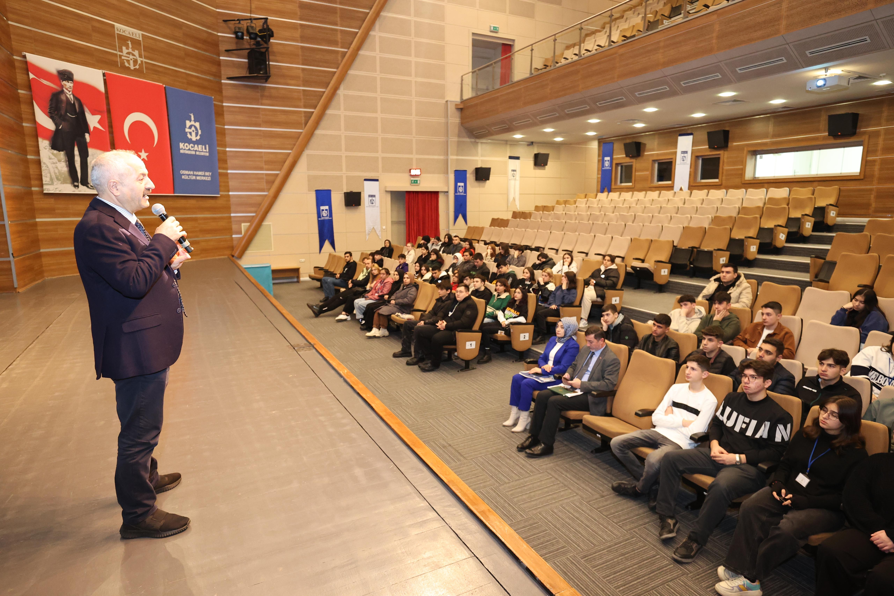
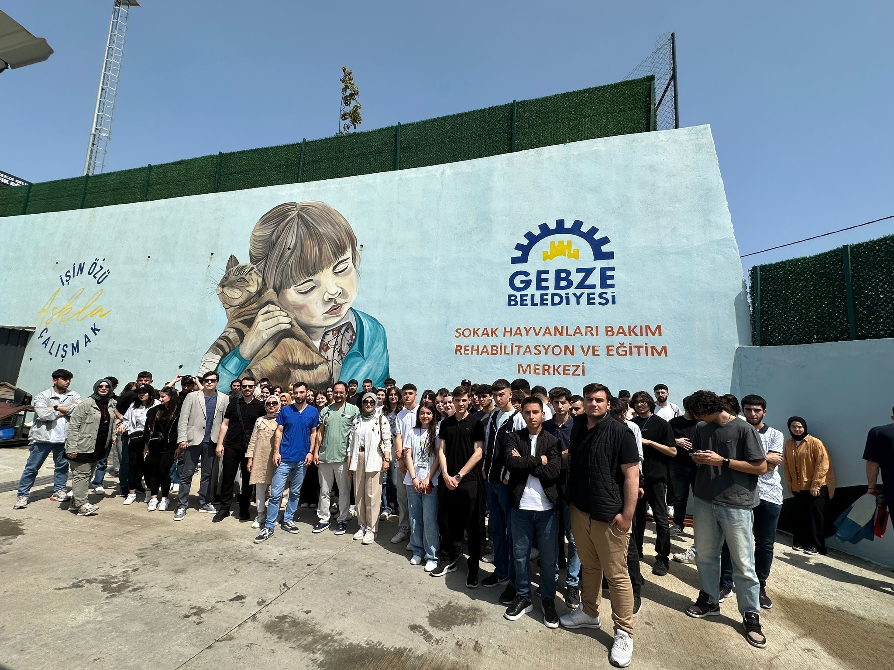
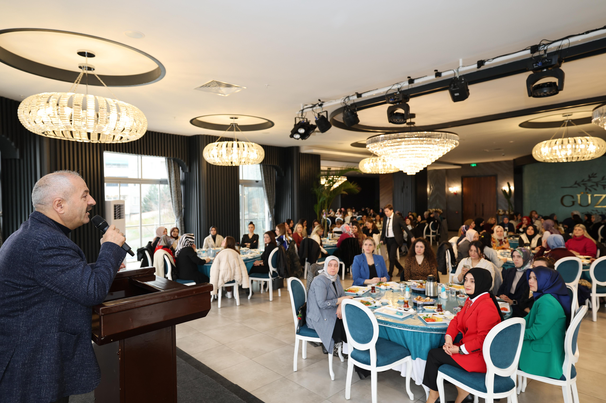
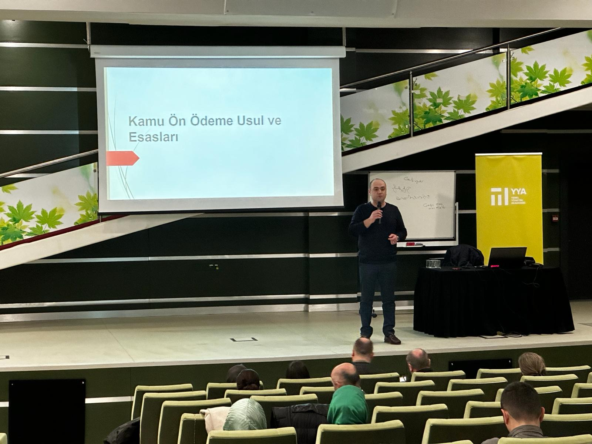
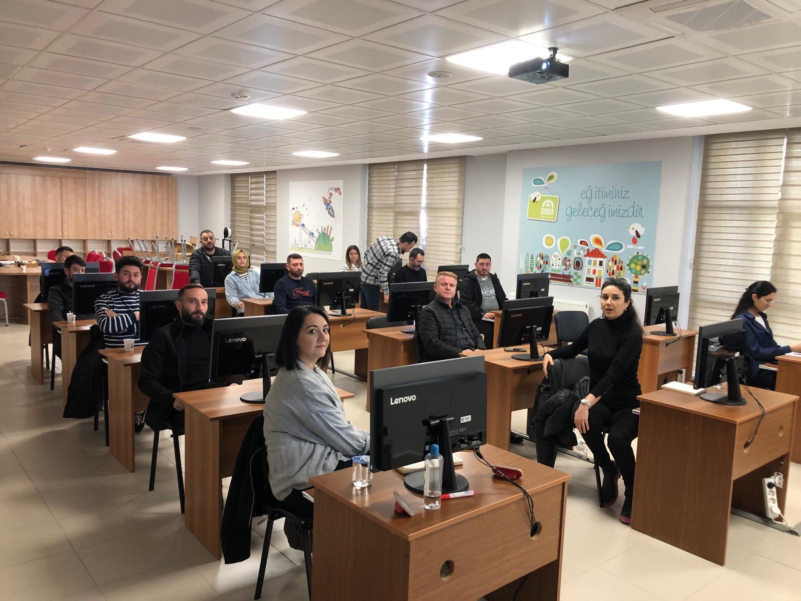
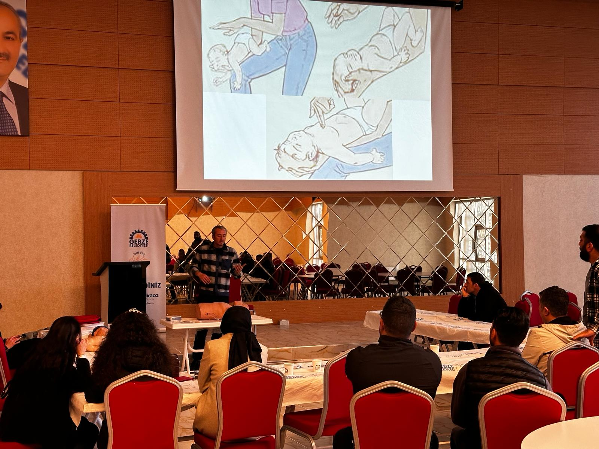
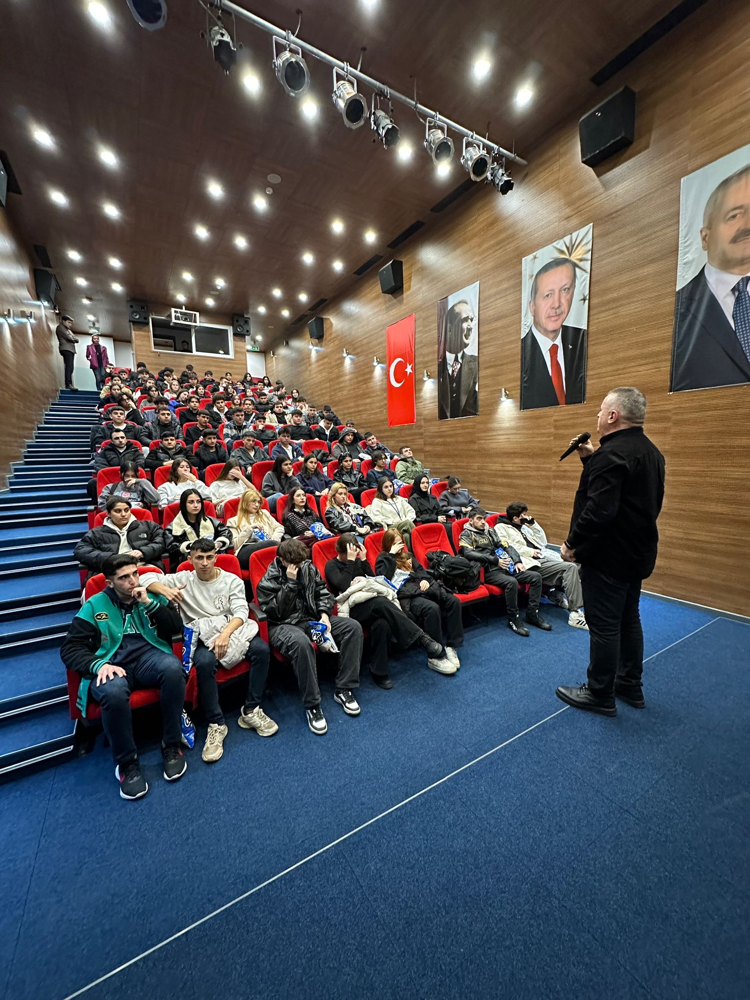
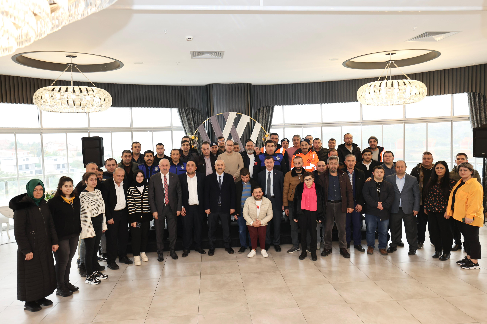
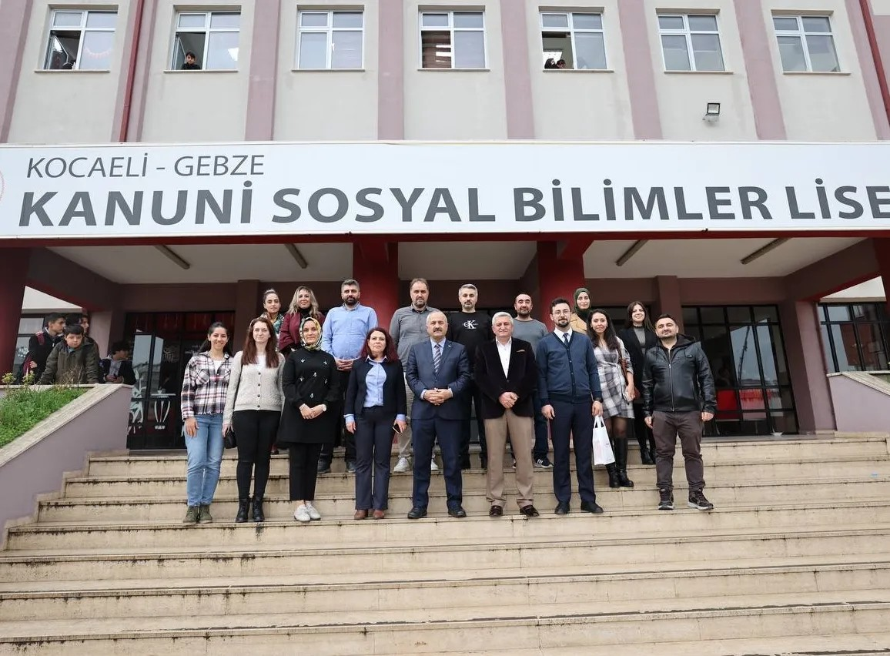
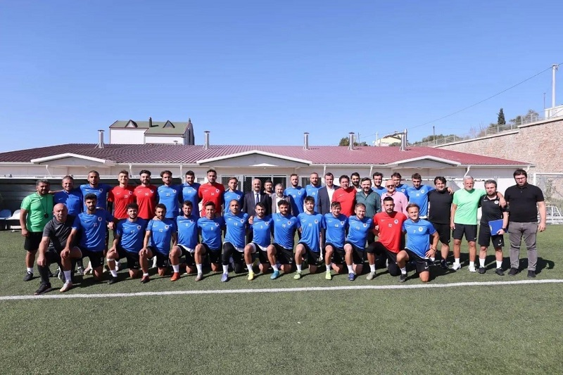

Müdürlüğümüz koordinatörlüğünde yürütülen çalışmalar kapsamında,
kurumumuzun çeşitli birimlerinde görev yapan personellerin ihtiyaç duyduğu eğitimler
titizlikle planlanarak başarıyla tamamlanmıştır.
Bu süreçte, personelimizin mesleki gelişimlerine katkı sağlamak ve hizmet kalitesini artırmak amacıyla
gerekli içerikler doğrultusunda eğitim programları etkili bir şekilde uygulanmıştır.
Stajyer Oryantasyon Eğitimi











